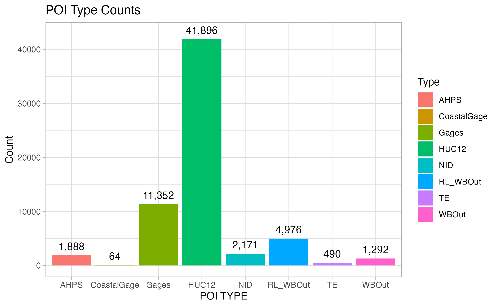

The Reference Fabric
Mike Johnson
Lynker, NOAA-AffiliateDavid Blodgett
USGS WMAAndy Bock
USGS WMAAngus Watters
LynkerSource:
vignettes/02-design-deep-dive.Rmd
02-design-deep-dive.RmdHow do we arrive at the NextGen Hydrofabric?
The NextGen model engine is intended to be model agnostic.
The hydrofabric is meant to be Model Application Agnostic.
-
This means that the hydrofabric should be able to support the modeling needs of applications like:
- NOAA NextGen (in its infinite flavors);
- the USGS NHM;
- the USGS SPARROW model;
- and eventually NOAA FIM.
The USGS-NOAA Reference Fabric
For a single system to serve many - often distinct - modeling applications, there needs to be a set reference system. (analogous to a coordinate reference system (CRS))
-
This reference system must provide the maximum (e.g. smallest discretization) set of features “allowable” for all interrelated model applications.
- Right now, this is the NHDPlusV2 (with modifications)
- In the future it will move to NHDHighRes and 3DHP
- In practice, reference fabrics can be built from other hydrographies (e.g. NGA TDX and MERIT)
A reference fabric is key to providing persistent identification (PID) for durable data integration and model interoperability
The development of this product has been collaborative venture between the USGS Water Mission Area, the NOAA Office of Water Prediction, and Lynker.

More on this has been documented here and the core data is available here
The 3 pillars of a Reference Fabric

1. Reference Features
Simple, valid, representations of all
flowpathanddividefeaturesMust be derived from a source hydrographic dataset (e.g. NHDPLus, or TDXhydro)
Currently, these are built out from the NHDPlusV2 features
Waterbodies are simplified, islands are dissolved, and they are unioned on GNIS_ID.

- Catchments are simplifed, and DEM fragments are dissolved into the proper adjoining catchments.

Flowlines are ensured to be digitized from upstream to downstream and the burn line events are substituted for the NHDFlowlines in headwater catchments
These data products can be foundhere
2. Reference Topology
Since its first release, the NHDPlus topology and value added attributes have been stable
Local groups and agencies have made modifications to this but these have never made it back into the primary source
Improvements made by the USGS, OWP, NCAR and others have been integrated to provide an updated network connectivity.
This data product can be found here and is described in the upcoming article “Generating a reference flow network with improved connectivity to support durable data integration and reproducibility in the coterminous US” {In press at EMS}


3. Reference Points of Interest (POI)
Points of Interest for hydrologic modelling are collected from a variety of of published data sources
These include ones like the Army Corp National Inventory of Dams and the USGS Gages III gage database

POIs become
hydrolocationsat the outflow of the linkedflowpaththrough a robust hydrologic indexing scheme.NOTE: These are locations that have been deemed of high general interest. There is no guarantee all gages, dams, thermoelectric plants are in the community set.
What is a VPU?
A VPU is a Vector Processing Unit. The USGS determined these regions when designing the NHDPlusV2. Since our work builds off the NHDPlusV2, we adopt these processing units.
## Warning in st_point_on_surface.sfc(sf::st_zm(x)): st_point_on_surface may not
## give correct results for longitude/latitude data
All hydrographic networks have VPU-esque discritizations. The key is that the source hydrofabric discritization can be retained through the manipulation process.
Below we show the tiling and drainage basin approaches of MERIT-hydro, BasinMaker, and NGA’s TDX-hydro.


caption
Getting the reference fabric
All reference products live on ScienceBase and the Lynker s3 account.
They can be accessed with the web interface or can be downloaded programatically.
The hydrofab::get_hydrofabric() utility will download
the most current geofabric for a Vector Processing Unit (VPU).
As an example, lets use the Geonconnex reference features to identify the location of our Fort Collins gage.
This location can be joined to the set of VPU boundaries severed with
nhdplusTools to find the correct VPU.
gage = read_sf('https://reference.geoconnex.us/collections/gages/items?provider_id=06752260')
gage = st_join(gage, st_transform(vpu_boundaries, st_crs(gage)))
(gage$VPUID)## [1] "10L"
reference_gpkg = get_hydrofabric(VPU = gage$VPUID, type = "reference",dir = "cihro-data")If the requested file already exists, the file path will be returned.
Working with the Geopackages
The geopackage is a critical file format for sharing this type of data because it is (1) self containing (2) compact and (3) language agnostic.
There are two broad paths to accessing the data.
The first is a GDAL based approach (in R this is using sf, but in python Fiona or geopandas works well).
# Read Options
pacman::p_load(sf, DBI, RSQLite, dplyr)
### 1. GDAL/geopackage
st_layers(reference_gpkg)## Driver: GPKG
## Available layers:
## layer_name geometry_type features fields crs_name
## 1 reference_waterbody Multi Polygon 21093 6 NAD83 / Conus Albers
## 2 reference_catchment Polygon 196552 8 NAD83 / Conus Albers
## 3 reference_flowline Line String 199756 45 NAD83 / Conus Albers
## 4 POIs_10L Point 8026 14 NAD83 / Conus Albers
## 5 poi_geometry_table Point 8024 3 NAD83 / Conus Albers
## 6 event_geometry_table Point 318 5 NAD83 / Conus Albers
## 7 reference_network NA 199756 20 <NA>
## 8 poi_data NA 11516 5 <NA>
## 9 event_data NA 320 6 <NA>
## 10 lookup_table NA 199830 4 <NA>
nex = read_sf(reference_gpkg, "POIs_10L")
head(nex)## Simple feature collection with 6 features and 14 fields
## Geometry type: POINT
## Dimension: XY
## Bounding box: xmin: -879917.6 ymin: 2011489 xmax: -865512.8 ymax: 2026539
## Projected CRS: NAD83 / Conus Albers
## # A tibble: 6 × 15
## COMID Type_HUC12 Type_Gages nexus Type_TE Type_WBOut Type_Term Type_Conf
## <dbl> <chr> <chr> <dbl> <chr> <dbl> <dbl> <dbl>
## 1 15995608 101800010701 NA 0 NA NA NA NA
## 2 15995906 101800010203 NA 0 NA NA NA 1135428
## 3 15996024 101800010202 NA 0 NA NA NA NA
## 4 15995532 101800010201 NA 0 NA NA NA NA
## 5 15996694 101800010305 NA 0 NA NA NA 1136099
## 6 15996702 101800010304 NA 0 NA NA NA 1136103
## # ℹ 7 more variables: Type_WBIn <dbl>, Type_NID <chr>, Type_Elev <dbl>,
## # Type_Travel <dbl>, id <int>, moved <int>, geom <POINT [m]>The second is as a SQLite database (in R, I am doing this with RSQLite/DBI/dplyr):
### 2. SQLite/Database
db <- dbConnect(SQLite(), reference_gpkg)
dbListTables(db)## [1] "POIs_10L"
## [2] "event_data"
## [3] "event_geometry_table"
## [4] "gpkg_contents"
## [5] "gpkg_extensions"
## [6] "gpkg_geometry_columns"
## [7] "gpkg_ogr_contents"
## [8] "gpkg_spatial_ref_sys"
## [9] "gpkg_tile_matrix"
## [10] "gpkg_tile_matrix_set"
## [11] "lookup_table"
## [12] "poi_data"
## [13] "poi_geometry_table"
## [14] "reference_catchment"
## [15] "reference_flowline"
## [16] "reference_network"
## [17] "reference_waterbody"
## [18] "rtree_POIs_10L_geom"
## [19] "rtree_POIs_10L_geom_node"
## [20] "rtree_POIs_10L_geom_parent"
## [21] "rtree_POIs_10L_geom_rowid"
## [22] "rtree_event_geometry_table_geom"
## [23] "rtree_event_geometry_table_geom_node"
## [24] "rtree_event_geometry_table_geom_parent"
## [25] "rtree_event_geometry_table_geom_rowid"
## [26] "rtree_poi_geometry_table_geom"
## [27] "rtree_poi_geometry_table_geom_node"
## [28] "rtree_poi_geometry_table_geom_parent"
## [29] "rtree_poi_geometry_table_geom_rowid"
## [30] "rtree_reference_catchment_geom"
## [31] "rtree_reference_catchment_geom_node"
## [32] "rtree_reference_catchment_geom_parent"
## [33] "rtree_reference_catchment_geom_rowid"
## [34] "rtree_reference_flowline_geom"
## [35] "rtree_reference_flowline_geom_node"
## [36] "rtree_reference_flowline_geom_parent"
## [37] "rtree_reference_flowline_geom_rowid"
## [38] "rtree_reference_waterbody_geom"
## [39] "rtree_reference_waterbody_geom_node"
## [40] "rtree_reference_waterbody_geom_parent"
## [41] "rtree_reference_waterbody_geom_rowid"
## [42] "sqlite_sequence"
mpoi = collect(tbl(db, "POIs_10L"))
head(mpoi)## # A tibble: 6 × 16
## fid geom COMID Type_HUC12 Type_Gages nexus Type_TE Type_WBOut
## <int> <blob> <dbl> <chr> <chr> <dbl> <chr> <dbl>
## 1 1 <raw 29 B> 15995608 101800010701 NA 0 NA NA
## 2 2 <raw 29 B> 15995906 101800010203 NA 0 NA NA
## 3 3 <raw 29 B> 15996024 101800010202 NA 0 NA NA
## 4 4 <raw 29 B> 15995532 101800010201 NA 0 NA NA
## 5 5 <raw 29 B> 15996694 101800010305 NA 0 NA NA
## 6 6 <raw 29 B> 15996702 101800010304 NA 0 NA NA
## # ℹ 8 more variables: Type_Term <dbl>, Type_Conf <dbl>, Type_WBIn <dbl>,
## # Type_NID <chr>, Type_Elev <dbl>, Type_Travel <dbl>, id <int>, moved <int>
dbDisconnect(db)Ok! With that, we have an idea of what the reference fabric is, how it was made, and how we can get it! The next stage is to learn how to manipulate this reference fabric for unique model applications.